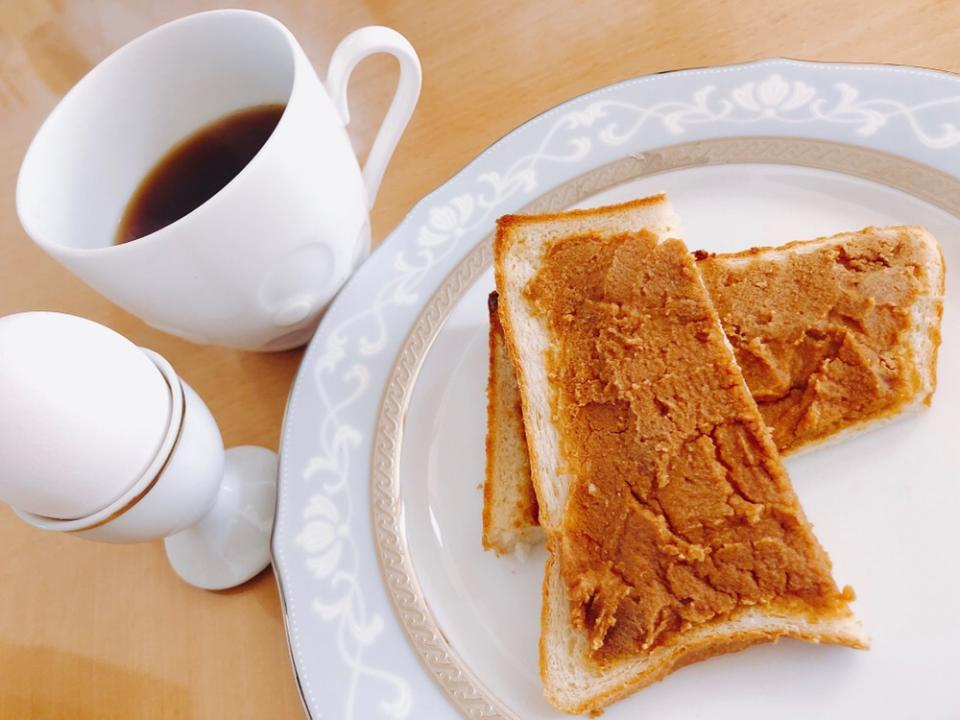

Kinako Bread

Description
This is a dish that I first ate while working at a junior high school
in Japan. It was included in that day's school lunch, and it was love
at first bite. I was such a fan that I learned how to make it on my own
so that I could eat it whenever I wanted.
Kinako is soybean flour. On its own it doesn't taste particularly
inspiring, but when mixed with other ingredients, like in this recipe,
it becomes a delightful taste sensation. This, and the ease with which it
can be prepared make it a handy recipe for breakfast, lunch, or even
afternoon tea, if you're into that.
Ingredients (makes 1 slice)
- 1 slice of white bread, preferably cut thick
- 2&1/2 tb butter
- 2 tb kinako
- 1 tb honey
Instructions
- Melt 1&1/2 tb butter in a bowl with a microwave. Next, add
the honey and kinako and mix until relatively smooth. Allow to sit and
stiffen a bit while preparing the bread.
- Spread the remaining 1 tb butter onto both sides of the bread.
Place into a frying pan on medium heat and flip it occasionally
until both sides are golden-brown.
- Remove the bread from the frying pan and place onto a plate. Spread
the now somewhat-stiffened kinako spread onto the top side of the
bread. For extra texture, a bit more kinako can be sprinkled onto
the bread.
- Enjoy with coffee, tea, or milk!